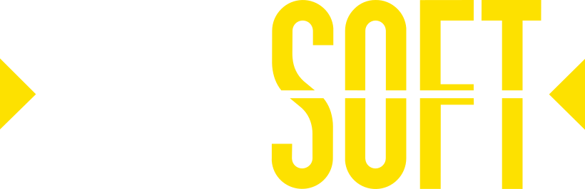

Rulaj x40 pe bonus și depunere
Bonusul de bun venit SLOTORO cere x40 pe suma bonusului plus depunerea. Dacă activezi o etapă, calculul pornește după creditare, iar fereastra standard de rulaj este de 5 zile.

Pachet până la €2.500 + 250 de rotiri gratuite pe primele 3 depuneri
Vezi ofertaSLOTORO Casino lucrează sub Wiraon B.V., cu licență Curaçao Gaming Control Board OGL/2024/686/0183. Pentru România, cazinoul afișează suport pentru limba română, monedă RON în lista de valute și acces prin site mobil; nu apare o licență locală ONJN.
Pentru jucătorii noi, SLOTORO oferă un pachet de până la €2.500 și 250 de rotiri gratuite, împărțit pe trei depuneri, cu rulaj x40 calculat pe bonus plus depunere.
Aplicația Android se descarcă prin butonul și codul QR din subsolul site-ului cazinoului. Pe iPhone nu există aplicație separată, dar versiunea mobilă din browser permite autentificare, jocuri și operațiuni în casierie.
Plățile includ metode clasice și cripto, iar Visa, Mastercard, Skrill și Neteller apar în casierie în funcție de țară. Depunerea minimă este €10 sau 20 RON, iar verificarea identității devine obligatorie după tranzacții totale de €1.000.
Bonusurile sunt condiții contractuale, nu bani liberi: plafonul de încasare, termenul de rulaj și miza maximă decid cât păstrezi din câștig. Pragurile de retragere și verificare merită citite înainte de depuneri mari.
Joacă doar cu un buget separat de cheltuielile curente și setează din cont limitele de joc responsabil: plafoane de depunere și de pierdere, durata sesiunii, notificări periodice și autoexcludere prin suport. Vârsta minimă declarată este 18+.
| Parametru | Detalii |
|---|---|
| Nume cazino | SLOTORO Casino |
| Site principal | slotoro.bet |
| Licență | Curaçao Gaming Control Board, OGL/2024/686/0183 |
| Operator | Wiraon B.V., reg. 146886, Curaçao |
| Disponibilitate România | Licență locală ONJN neafișată; limba română și RON sunt disponibile |
| Vârstă minimă | 18+ |
| Bonus de bun venit | Până la €2.500 + 250 de rotiri gratuite, rulaj x40 (bonus + depunere) |
| Cod promoțional | Nu este indicat ca obligatoriu; bonusul se activează în profil înainte de depunere |
| Aplicație | Aplicație Android; pe iOS, site mobil în Safari sau Chrome |
| Jocuri | Sloturi, cazino live, jocuri de masă, jocuri instant, pariuri sportive |
| Plăți | Bitcoin, USDT, Litecoin, MiFinity, AstroPay; Visa, Mastercard, Skrill și Neteller pot apărea în casierie |
| Timp retragere | Între 12 ore și 2 zile lucrătoare până la €499; până la 5, 14 sau 30 de zile lucrătoare pentru sume mai mari |
| KYC | Obligatoriu de la €1.000 tranzacții totale; documentele se verifică în până la 3 zile lucrătoare |
| Suport | Chat live 24/7, support@slotoro.bet; fără suport telefonic |
| Valute | EUR, USD, CAD, CHF, NZD, PLN, RON, BGN, HUF, DKK, NOK, SEK |
| Ultima actualizare | 29 mai 2026 |

Valoarea crește odată cu statusul din programul de loialitate
Pachetul pare simplu la prima vedere, dar câteva reguli decid cât de ușor îl poți folosi.
Bonusul de bun venit SLOTORO cere x40 pe suma bonusului plus depunerea. Dacă activezi o etapă, calculul pornește după creditare, iar fereastra standard de rulaj este de 5 zile.
Fiecare etapă a pachetului trebuie activată în profil înainte de plată. Dacă depui fără activare, nu presupune că oferta intră automat; verifică statusul în cont sau cere confirmare în chat.
Cazinoul live, jocurile de masă și jocurile instant precum lozuri digitale, Mines, Plinko, keno, jocuri cu zaruri, bingo sau roți nu intră în rulajul standard. Sloturile contribuie 100%, cu excepții declarate în termeni.
Pentru pachetul de bun venit, plafonul de retragere este x5 din depunere. O cerere de retragere înainte de finalizarea rulajului anulează bonusurile active, inclusiv rotirile gratuite și rotirile Wheel of Fortune.
Punctele de mai jos urmăresc criteriile care contează înainte de depunere: licență, bonusuri, plăți, KYC, aplicație și program de loialitate.
Cash Explosion și Endorphina cu câte €10.000, plus Sport Championship cu €3.000, în fiecare săptămână
Vezi turneeleSLOTORO organizează două turnee săptămânale de cazino, cu clasament după câștiguri, și un campionat sportiv în care contează suma pariată. Taxa de intrare nu este dezvăluită, iar regulile complete se găsesc în pagina fiecărui turneu.
| Turneu | Tip joc | Fond premii | Taxă intrare | Date | Cum participi | Termeni |
|---|---|---|---|---|---|---|
| Cash Explosion | Cazino (câștiguri) | €10.000 | Nedezvăluită | Săptămânal, activ | Intră în secțiunea Turnee și joacă titlurile eligibile din cont. | Regulile complete se citesc în pagina turneului înainte de miză. |
| Endorphina | Cazino (câștiguri) | €10.000 | Nedezvăluită | Săptămânal, activ | Joacă sloturile Endorphina eligibile după autentificare, dacă turneul apare pentru contul tău. | Verifică mecanica de punctare și restricțiile de miză în lobby. |
| Sport Championship | Sport (sumă pariată) | €3.000 | Nedezvăluită | Săptămânal, activ | Participarea se face din zona de pariuri sportive, conform regulilor campaniei. | Poate depinde de tipul pariului, sumă și piețele eligibile. |
SLOTORO este un operator offshore pentru jucătorii români, nu un cazino afișat ca licențiat local de ONJN. Operatorul indicat este Wiraon B.V., iar licența afișată aparține Curaçao Gaming Control Board. Pentru un utilizator din România, asta înseamnă că verificarea legală trebuie făcută înainte de joc, mai ales dacă apar modificări în lista țărilor acceptate.
Vârsta minimă declarată este 18+. Plata taxelor pentru eventuale câștiguri ține de regulile fiscale locale și de situația fiecărui jucător; pagina nu înlocuiește consultanța juridică sau fiscală. Verifică regulile actuale din România înainte de a depune bani reali.
ONJN publică registrul operatorilor licențiați și lista site-urilor neautorizate; acestea sunt primele surse de consultat pentru statutul unui cazino online în România.
Contul poate fi creat cu email și parolă, telefon și parolă sau prin Google, X ori TikTok. Datele trebuie să coincidă cu documentele folosite la KYC, pentru că numele de pe card și emailul portofelului trebuie să se potrivească profilului.
Alege metoda de înregistrare și setează de la început moneda potrivită. Pentru România, RON este listat printre valutele disponibile, dar casieria poate afișa opțiuni diferite după localizare.
Activează bonusul în profil înainte de plată, apoi verifică metoda acceptată în casierie. Dacă autentificarea se blochează pe Android, iOS sau Windows, începe cu resetarea parolei și curățarea cache-ului.
La verificare, SLOTORO cere actul de identitate, o fotografie a cardului pe care CVV-ul și cifrele din mijloc pot fi acoperite, dar numele rămâne vizibil, plus un selfie cu documentele în mână. Răspunsul vine în cel mult 3 zile lucrătoare.
Lobby-ul live SLOTORO include 352 de titluri. În listă apar blackjack live, ruletă live, baccarat live, poker live, show-uri de joc și jocuri live cu zaruri, cu exemple precum Romanian Blackjack 1, Blackjack VIP, Money Time, Snake & Ladders Live și Gates of Olympus Roulette.
Pentru jocurile de masă clasice, SLOTORO grupează categorii precum Blackjack, Ruletă, Video Poker și Jocuri de masă. Parametrii tehnici precum RTP, miză minimă, miză maximă sau volatilitate diferă după titlu, așa că fișa jocului trebuie citită în lobby înainte de miză.
Mesele live au două limite pentru jucătorii cu bonus: mizele nu contează la rulajul pachetului de bun venit și nu aduc puncte în programul de loialitate. Pentru rulaj, folosește sloturile eligibile și citește lista de jocuri restricționate înainte de sesiune.

SLOTORO separă programul de loialitate de VIP Space. Loialitatea are 10 statusuri și 99 de niveluri, iar VIP Space se deblochează prin realizări în joc, nu prin invitație manuală.
Primești 1 punct de recompensă pentru fiecare €5 mizați, cu excepția cazinoului live și a jocurilor excluse din lista de termeni.
Cashbackul pornește de la 3% la Challenger și ajunge la 7% la God of Fortune; bonusul săptămânal crește pe status.
Zona VIP promite limite mai mari de retragere, procesare mai rapidă, jocuri exclusive, promoții dedicate și un manager personal.
Punctele se convertesc în bani reali după rata statusului. La Challenger rata este 500:1, iar la God of Fortune ajunge la 100:1, cea mai bună rată din program.
Programul de loialitate combină bonusuri săptămânale, bonus de ziua ta, cashback și conversia punctelor. Unele jocuri și furnizori, inclusiv Aviatrix și Spribe, nu acumulează puncte.
Printre titlurile fără puncte se află și Big Bass Crash, Plinko de la BGaming sau Jet X, așa că verifică lista de excluderi înainte să joci mult pe același titlu.
Tabelul păstrează cele mai utile repere: pragul de puncte, cashbackul și rata de conversie. Bonusurile săptămânale includ valori și rotiri diferite în funcție de status.
| Status | Puncte | Cashback / rată |
|---|---|---|
| Novice | 0 | Fără cashback |
| Challenger | 500 | 3% / 500:1 |
| Competitor | 1.500 | 3% / 450:1 |
| Expert | 10.000 | 4% / 400:1 |
| Elite | 20.000 | 4% / 350:1 |
| Highroller | 50.000 | 5% / 300:1 |
| Magnate | 110.000 | 5% / 250:1 |
| Legend | 200.000 | 6% / 200:1 |
| Supreme | 500.000 | 6% / 150:1 |
| God of Fortune | 1.000.000 | 7% / 100:1 |
Până la deblocare, pagina VIP Space afișează un mesaj care arată cât de aproape ești de acces. Odată intrat, beneficiile VIP se adaugă celor din programul de loialitate, nu le înlocuiesc.
SLOTORO indică Wiraon B.V. ca proprietar, operator și titular al licenței, iar Curaçao Gaming Control Board ca regulator, cu licența OGL/2024/686/0183. Cazinoul mai afișează Gamecheck SEAL, criptare SSL pe 128 de biți, protecție prin firewall și un generator RNG auditat, cu certificare eCOGRA.
Pentru România, SLOTORO nu afișează o licență locală ONJN. Lista de țări acceptate se poate schimba; verifică accesul din cont și termenii actuali înainte să depui bani reali.
KYC/AML contează mult: plățile cu instrumente anonime, cardurile terțe și VPN-ul pentru ocolirea restricțiilor geografice pot duce la verificare eșuată. Emailul portofelului electronic trebuie să fie același cu cel al contului.
Pe Android instalezi aplicația oficială și ai acces la promoția Break the Piggy Bank. Pe iPhone joci direct din browser, fără descărcare.
Jocurile de cazino implică risc, iar avantajul matematic rămâne de partea operatorului pe termen lung. Setează o sumă fixă înainte de sesiune și nu folosi bani pentru chirie, rate, facturi sau economii.
În contul SLOTORO poți seta plafoane pentru depuneri și pierderi, poți limita durata sesiunilor, poți primi mementouri periodice, poți cere autoexcludere prin suport și poți face testul de autoevaluare. Activează limitele înainte să ai nevoie de ele, nu după o sesiune impulsivă.
Subsolul site-ului SLOTORO trimite către GamCare, Gambling Therapy, GamBan, BetBlocker și GambleAware. Dacă jocul începe să afecteze somnul, munca sau relațiile, oprește depunerile și cere ajutor specializat.
SLOTORO grupează jocurile în categorii precum Populare, Noi, Sloturi, Top jocuri, Megaways și Sloturi clasice.


SLOTORO combină pachetul de bun venit, cashback, bonus sport, rotiri gratuite fără depunere și promoții legate de aplicația Android. Termenii trebuie verificați în cont înainte de activare.
Oferta principală ajunge la €2.500 și 250 de rotiri gratuite pe trei depuneri, iar fiecare etapă se activează separat în profil, înainte de plată.
Rulajul este x40 pe bonus plus depunere. Sloturile contribuie 100%, cu excepția Big Bass — Hold & Spinner de la Pragmatic Play, unde contribuția menționată este 15%.
Dacă rotirile Pragmatic nu sunt disponibile în regiune, suportul poate înlocui rotirile gratuite cu Pyro Joker de la Evoplay. Cumpărarea funcției bonus și jocul de dublaj contează ca rotiri obișnuite la rulaj.
Cashbackul poate ajunge până la €1.000, iar procentul, între 3% și 7%, depinde de statusul din programul de loialitate, la fel ca bonusul săptămânal.
La înregistrare, SLOTORO oferă 50 de rotiri gratuite pe Gates of Olympus, cu rulaj x5, plafon de retragere x3 și valabilitate de 5 zile. Pentru pariuri sportive există un bonus separat de până la €700.
Se aplică pe bonus plus depunere; validitatea rulajului este 5 zile de la creditare.
După activare, ai 72 de ore să faci depunerea pentru etapa respectivă.
Plafonul se calculează din depunere, nu din suma bonusului.
Cashbackul ajunge în soldul bonus și trebuie folosit în 5 zile.
Tabelul reunește pachetul pe trei depuneri, bonusul Highroller de vineri, cashbackul de luni și rotirile fără depunere. Sumele sunt exprimate în euro; pentru un cont în altă monedă se aplică echivalentul, iar condițiile finale apar în profil înainte de activare.
| Bonus | Valoare | Cod promoțional | Rulaj | Depunere minimă | Bonus maxim | Valabilitate | Jocuri restricționate | Retragere maximă |
|---|---|---|---|---|---|---|---|---|
| Bonus la prima depunere | 100% + 100 de rotiri gratuite | Nu este necesar; activează oferta în profil. | x40 pe bonus plus depunere; fiecare bonus are rulajul lui separat. | €10 / 20 RON | Până la €500 | 72 de ore pentru depunere după activare; rulajul expiră în 5 zile. | Cazino live, jocuri de masă, jocuri instant; Big Bass — Hold & Spinner contează 15%. | De 5 ori depunerea, pentru pachetul de bun venit. |
| Bonus la a doua depunere | 75% sau 125% + 50/75 de rotiri gratuite | Nu este necesar; alege etapa disponibilă în profil. | x40, dacă profilul bonusului nu afișează altă condiție. | €10 / 20 RON; depunerea se face după activare. | Până la €1.000 | 72 de ore pentru etapa activată; 5 zile pentru rulaj. | Rotirile pot fi pe Coin Win: Hold The Spin sau Sweet Bonanza 1000; jocurile excluse nu rulează bonusul. | De 5 ori depunerea, conform regulii pachetului. |
| Bonus la a treia depunere | 150% + 75 de rotiri gratuite | Nu este necesar; etapa se activează în profil. | x40 pentru pachetul de bun venit. | €10 / 20 RON | Până la €1.000 | 72 de ore pentru depunere după activare; 5 zile pentru rulaj. | Rotiri pe Blazing Crown Deluxe; dacă furnizorul nu este disponibil în regiune, se înlocuiesc cu Pyro Joker. | De 5 ori depunerea. |
| Bonus Highroller de vineri | Bonus de 50% sau 100% la depunere | Nu este necesar; oferta apare în profil vinerea. | 50%: x40; 100%: x30. | €100 pentru varianta de 50%; €300 pentru varianta de 100%. | Până la €3.000 pe săptămână | 5 zile pentru completarea rulajului. | Cazino live, jocuri de masă și jocuri instant excluse; se aplică miza maximă cu bonus activ. | De 5 ori depunerea. |
| Cashback de luni | Cashback automat, în funcție de statusul de loialitate | Nu necesită cod. | De la x12 la x3, în funcție de status. | Nu este un bonus de depunere; se calculează din activitatea săptămânală. | Până la €1.000 | 5 zile de la creditare. | Se aplică regulile generale ale bonusurilor și excluderile din profil. | Fără plafon. |
| Bonus fără depunere | 50 de rotiri gratuite pe Gates of Olympus | Nu este necesar; rotirile se acordă la înregistrare. | x5 | Fără depunere; pentru KYC poate fi cerută ulterior o depunere. | 50 de rotiri gratuite | 5 zile | Rotirile se joacă doar pe Gates of Olympus; cazinoul live, jocurile de masă și cele instant nu rulează bonusul. | x3; după o depunere, plafonul crește cu suma depusă. |
Miza maximă la rulaj: 5 EUR/USD/CAD/NZD/CHF, 20 RON/PLN/PEN, 25 BRL/DKK, 50 NOK/SEK sau echivalentul din termenii bonusurilor. Depășirea mizei maxime poate anula bonusul și câștigurile asociate.
SLOTORO acceptă atât metode cripto, cât și carduri și portofele electronice. Retragerile se cer doar din contul de pe site, către metode deținute de jucător și după verificarea necesară.
| Metodă / regulă | DepunereDetalii | RetragereTermen / limită | KYCObservații |
|---|---|---|---|
| Carduri și portofele electronice | Visa, Mastercard, Skrill și Neteller pot apărea în casierie; metodele variază după cont și țară. | Retragerile se cer exclusiv din site, nu prin telefon sau email. | Cardul sau portofelul trebuie să aparțină titularului contului. |
| Cripto și alte metode | Sunt acceptate BTC, USDT, LTC, ETH, USDC, DOGE, TON, BNB, Tron, Binance Pay, AstroPay, MiFinity și altele. | Metoda preferată nu este garantată; operatorul poate procesa plata printr-o alternativă. | Instrumentele anonime și plățile către alt utilizator sunt interzise. |
| Depunere minimă | €10 sau 20 RON; o depunere poate ajunge la €10.000, în funcție de metodă. | Conversia valutară nu este disponibilă; jocurile pot depinde de moneda aleasă. | Operatorul poate cere detalii suplimentare la orice depunere nouă. |
| KYC standard | Verificare obligatorie după tranzacții totale de €1.000 sau la risc ridicat. | Orice retragere de peste €1.000 poate declanșa verificarea. | ID, card fotografiat corect, selfie cu documente; uneori dovadă de adresă sau a sursei fondurilor. |
| Retrageri până la €499 | Minimum €20 pentru carduri și portofele electronice; la cripto, minimul depinde de comisioanele rețelei. | Între 12 ore și 2 zile lucrătoare. | Verificarea poate fi cerută înainte de procesare. |
| Retrageri €500 – €4.999 | Depinde de metoda aleasă. | Între 48 de ore și 5 zile lucrătoare. | Sumele mari pot primi verificări suplimentare. |
| Retrageri €5.000 – €29.999 | Cont verificat și cerințe de rulaj îndeplinite. | Între 96 de ore și 14 zile lucrătoare. | Datele de joc și tranzacțiile pot fi verificate înainte de plată. |
| Retrageri €30.000+ | Se aplică limita lunară de retragere de €30.000. | Între 96 de ore și 30 de zile lucrătoare. | Regula specială de 20× depuneri poate reduce limita la €5.000 pe 30 de zile. |
| Rulaj și comisioane | Depunerea ar trebui rulată de cel puțin 2 ori înainte de retragere. | Altfel, cazinoul poate reține un comision egal cu costurile de procesare. | Comisionul nu se aplică dacă rulajul de 2x a fost atins. |
Scorurile reflectă criteriile analizate: licență, termeni bonus, mobil, plăți, suport și instrumente de joc responsabil. Nu reprezintă garanție de câștig sau recomandare financiară.
SLOTORO afișează 94 de jocuri în secțiunea Populare, 137 în secțiunea Noi și 352 de titluri de cazino live. Catalogul include și studiouri precum Pragmatic Play, Novomatic, Push Gaming sau Hacksaw Gaming.
Punctul slab: RTP, volatilitatea și limitele de miză trebuie citite în fișa fiecărui joc, deoarece nu apar uniform în lobby.
Pachetul de bun venit are valoare mare, dar rulajul x40 pe bonus plus depunere cere atenție. Aplicația Android aduce și o promoție proprie, Break the Piggy Bank.
Pentru iOS, SLOTORO indică acces prin site mobil. De aceea experiența mobilă primește scor bun, nu maxim.
Licența Curaçao GCB, Gamecheck SEAL, SSL și procedurile KYC oferă bază documentată. Suportul are chat live 24/7, email și limba română în lista de limbi.
Riscul principal pentru România rămâne lipsa unei licențe locale ONJN afișate. Scor total: 4,1/5.
SLOTORO lucrează cu 66 de furnizori de jocuri, inclusiv Evoplay, Yggdrasil, Play'n GO, Gamomat, Betsoft, Spinomenal și Gamzix. Portofoliul acoperă sloturi, cazino live, jocuri de masă, Megaways și jocuri instant.


Răspunsuri directe despre bonusuri, acces mobil, KYC și reguli utile pentru jucătorii din România.
Pe baza a 6 opinii de jucători
"Mi-a plăcut că RON apare la valute și că lobby-ul nu se mișcă greu pe telefon. Bonusul e bun ca sumă, dar x40 pe bonus plus depunere nu e ceva de ignorat."
"Pe iPhone am intrat doar din Safari, nu am găsit aplicația. Site-ul mobil e ok, dar mi-ar fi plăcut să scrie mai clar asta înainte să caut în App Store."
"Programul de puncte are sens dacă joci constant. Nu e pentru mine să urc până la God of Fortune, dar statusurile de mijloc chiar au cashback vizibil."
"Înregistrarea a fost rapidă, dar am stat să citesc partea cu bonusul. Mi se pare corect că trebuie activat înainte de depunere, doar să nu uiți."
"Turneele Cash Explosion și Endorphina sunt partea interesantă pentru mine. Nu joc zilnic, dar clasamentul te face să verifici mai des pagina."
"Cazinoul live are multe mese, inclusiv Romanian Blackjack 1, ceea ce mi-a atras atenția. Minusul e că live-ul nu ajută la rulajul bonusului, deci îl joc separat."
SLOTORO oferă chat live 24/7, email la support@slotoro.bet și un responsabil cu protecția datelor la dpo@slotoro.bet. Suport telefonic nu este disponibil.
Canal 01
Chatul live este canalul principal pentru bonusuri, autentificare, KYC și casierie. Limbile de suport menționate includ engleză, germană, italiană, bulgară, greacă, maghiară, poloneză, portugheză și română.
Canal 02
Pentru verificare, dispute de plată sau întrebări despre date personale, folosește support@slotoro.bet sau dpo@slotoro.bet. Include ID-ul contului, metoda de plată și capturi relevante, fără parole.
Pentru reclamații, începe cu chatul și cere număr de caz sau confirmare pe email. Păstrează istoricul conversației, termenii bonusului activ și dovada tranzacțiilor până se închide cazul.